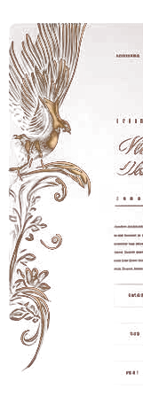
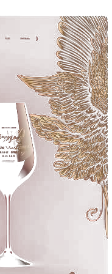
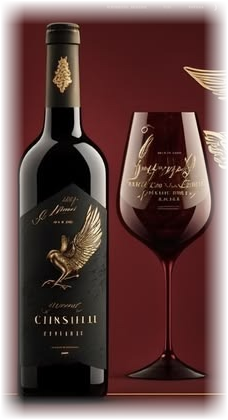

"Cấu trúc chắc chắn, hương quả mận chín, anh đào đen, sô-cô-la đen hòa quyện cùng gia vị nướng ấm áp của gỗ sồi lâu năm."

Mỗi giọt rượu là sự kết tinh của thổ nhưỡng trù phú và tay nghề bậc thầy làm vang châu Âu.
Toàn bộ 35 kiệt tác vang thượng hạng đã được khảo sát thực tế và lưu trữ toàn vẹn thuộc tính.
Tuyển chọn các niên vụ danh giá từ Saint-Émilion, Margaux, Pauillac, Pomerol được bảo quản hầm tối 16°C.
XEM VANG PHÁP CAO CẤPSaint-Émilion • Niên vụ 2004 & 1994
Saint-Émilion • Niên vụ 1995 huyền thoại
Pauillac • Niên vụ 1993 & 1997
Phòng thử nếm Sommelier VIP tại 3 thành phố lớn sẵn sàng đón tiếp quý khách.
184–186 Lê Lai, Phường Bến Thành, Quận 1
Hotline: 0911 00 22 33
Giờ đón tiếp: 9:00 – 21:00 (Mỗi ngày)
Trung tâm Quận Hoàn Kiếm, TP. Hà Nội
Hotline: 0911 00 22 33
Giao hỏa tốc nội thành trong 2 giờ
Quận Hải Châu, TP. Đà Nẵng
Hotline: 0911 00 22 33
Cung cấp vang cho Resort & Khách sạn 5 sao